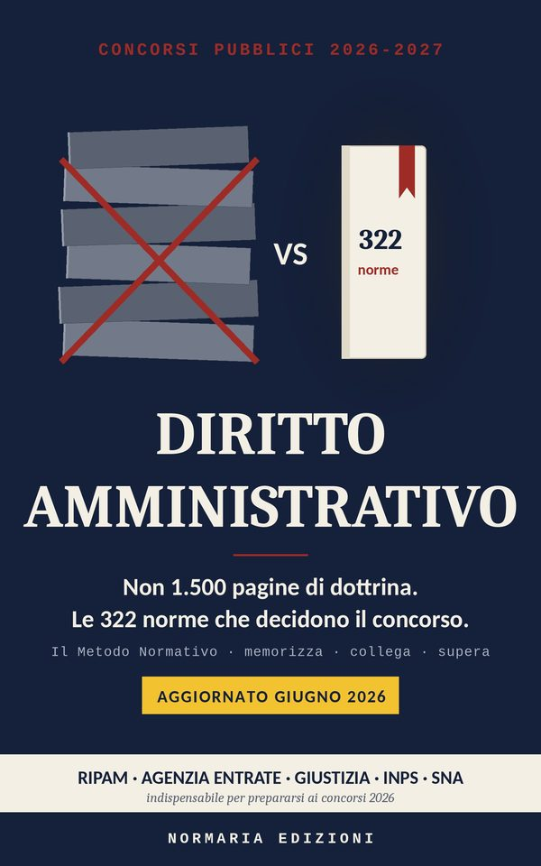

Disponibile
Le 320 norme fondamentali
Diritto Amministrativo
Il cuore di quasi ogni concorso pubblico: procedimento, provvedimento, accesso agli atti e giustizia amministrativa, in 320 schede tutte della stessa forma.
320 norme
Acquista su Amazon